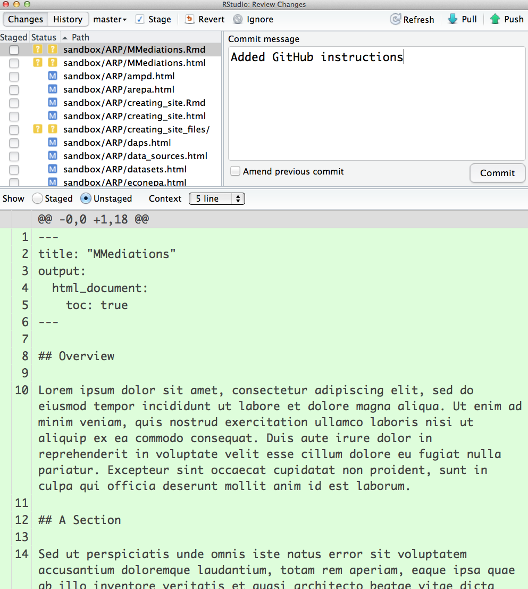

Creating this site
Overview
This website is written in R Markdown (http://rmarkdown.rstudio.com/). It can be edited and published from RStudio.
R Markdown


Example
fit <- lm(dist ~ speed, data = cars)
summary(fit)##
## Call:
## lm(formula = dist ~ speed, data = cars)
##
## Residuals:
## Min 1Q Median 3Q Max
## -29.07 -9.53 -2.27 9.21 43.20
##
## Coefficients:
## Estimate Std. Error t value Pr(>|t|)
## (Intercept) -17.579 6.758 -2.60 0.012 *
## speed 3.932 0.416 9.46 1.5e-12 ***
## ---
## Signif. codes: 0 '***' 0.001 '**' 0.01 '*' 0.05 '.' 0.1 ' ' 1
##
## Residual standard error: 15.4 on 48 degrees of freedom
## Multiple R-squared: 0.651, Adjusted R-squared: 0.644
## F-statistic: 89.6 on 1 and 48 DF, p-value: 1.49e-12plot(fit, 2)Preview (with RStudio)
Page
Knit HTML button
Site
One of the four default panels has a Build tab with a Build All button. It calls a Makefile which performs all the required steps.
Publishing
One of the four default panels has a Git tab with Pull and Commit buttons.
Pull

Commit
(Don’t forget to build the site and select the files of interest!)
Provide a short description of the changes you made:

Push